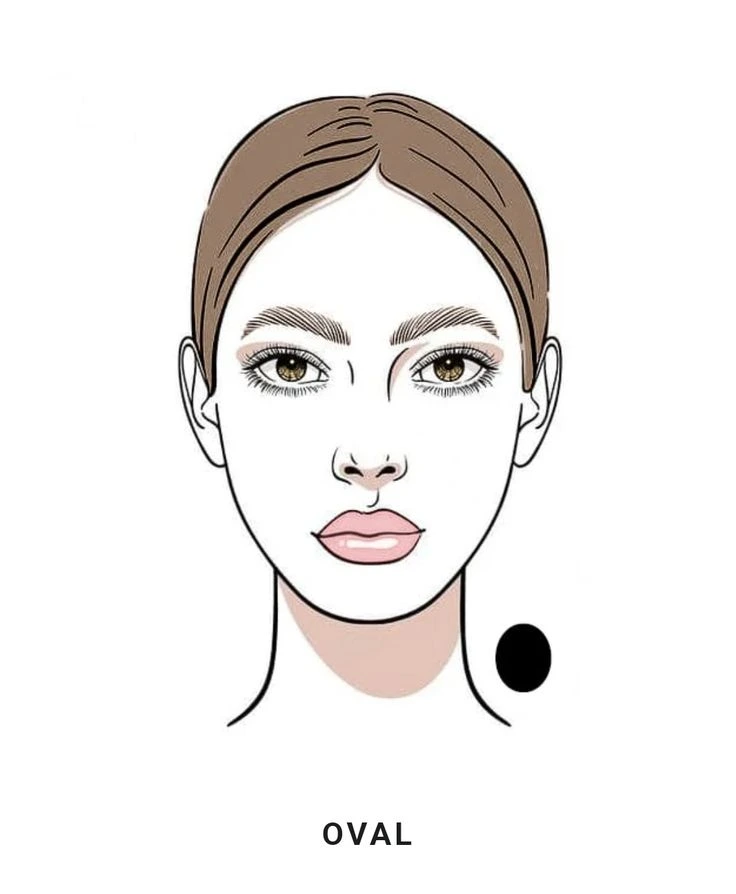
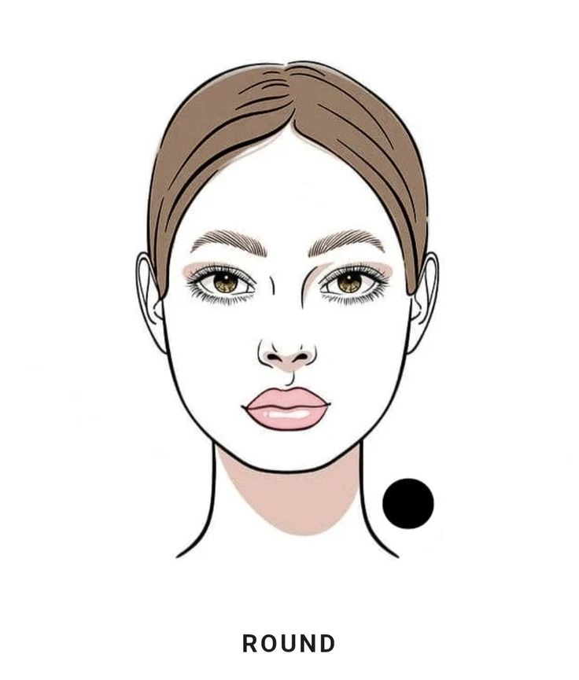
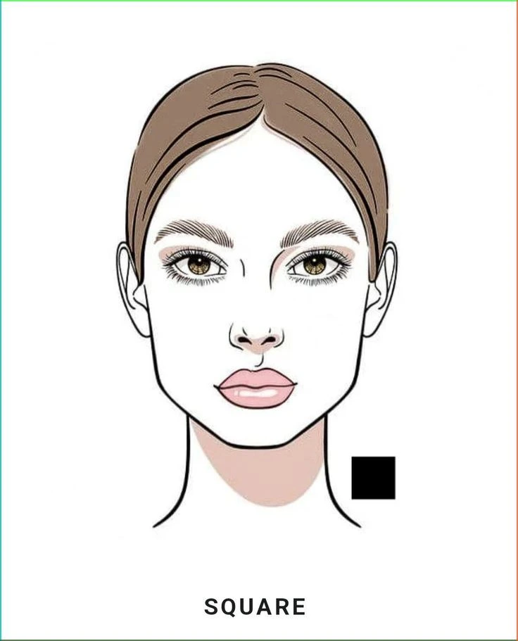
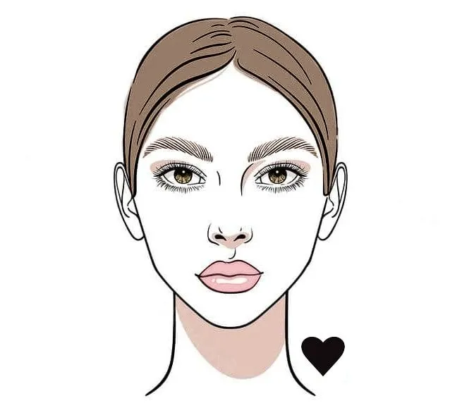
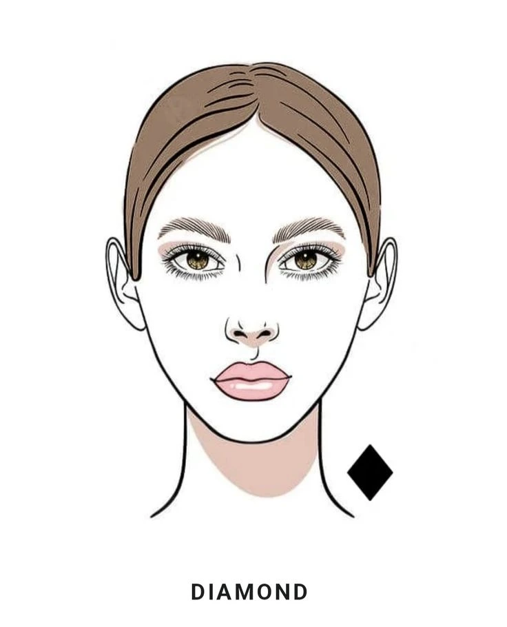
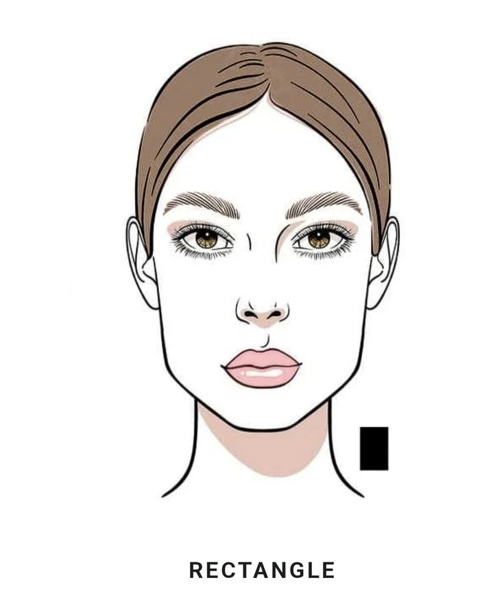
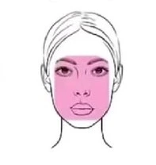
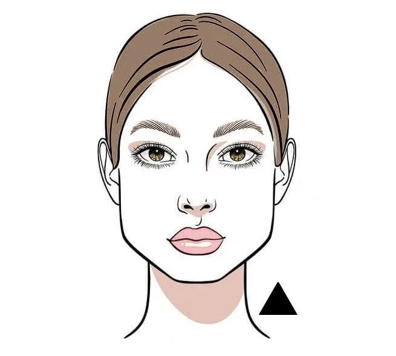

- Oval: Face length is greater than the width, with a forehead slightly wider than the rounded jaw and softly tapered chin.
- Round: Face length and cheekbone width are roughly equal with soft, curved lines and a smooth, unangled jawline.
- Square: Face length, forehead, cheekbones, and jaw width are all nearly equal, defined by a strong, angular jawline.
- Heart: Widest at the forehead and cheekbones, gradually tapering down to a narrow or pointed chin.
- Diamond: Cheekbones are the widest part of the face, paired with a narrow forehead and a pointed chin.
- Rectangle: Features a sharp, boxy, and angular jawline with visible, distinct corners near the mandible and a flatter, squarer chin base.
- Oblong: Features the same long, balanced proportions, but with a softer, more rounded jawline and a curved, U-shaped chin.
- Triangle / Pear: Jawline is wider than the cheekbones and forehead, creating a broader lower face.
- Inverted Triangle: a wide forehead and temples that tapers steadily down to a narrow, pointed chin.







